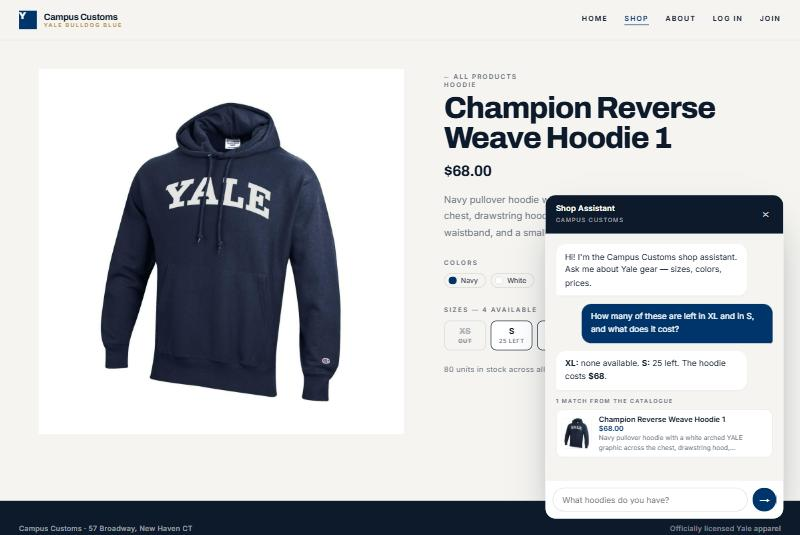
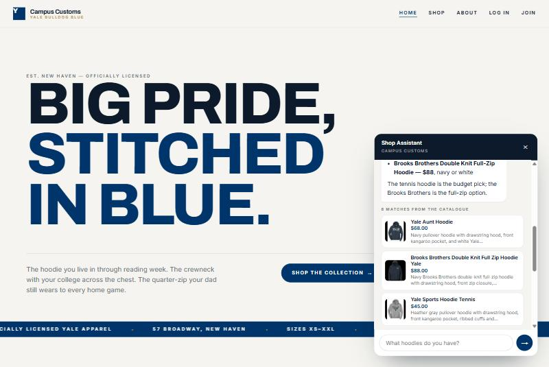
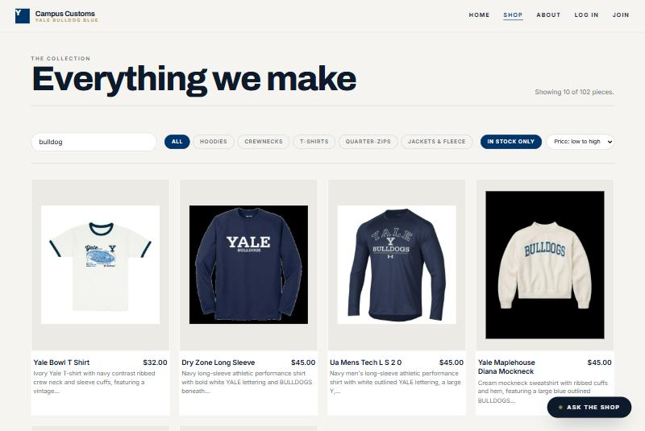
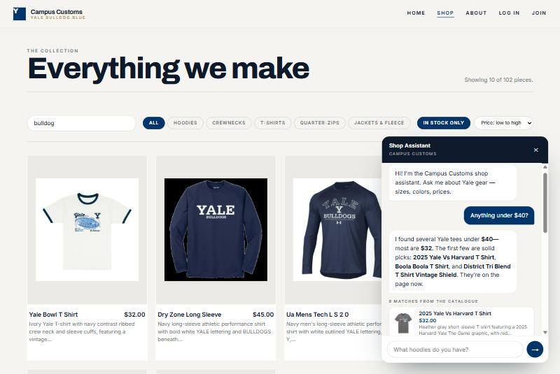

Campus Customs · Yale Bulldog Blue
App check
Screenshots taken from the running application — React + Vite frontend on
:5173, FastAPI backend on :8000, agent answering through
Claude Opus 5. Every number shown below was cross-checked against
campus_customs.db.
01 Chat inventory lookup — real stock and price
On the Champion Reverse Weave Hoodie page, the shopper asks
“How many of these are left in XL and in S, and what does it cost?” — without naming the
product. The agent resolves “these” from the page it is on, calls
check_size_availability, and reports
“XL: none available. S: 25 left. The hoodie costs $68.”

catalogue and inventory rows.
Stock and pricing are read live from the database per question, never recalled — a sold-out size is reported as a plain “none available” rather than hedged.
02 Category question renders product cards
Asking “What hoodies do you have?” makes the agent search the catalogue, and the frontend renders the structured matches it returns as product cards — image, name, price and a short description — under the reply.

This is the API contract working end to end: the agent supplies structured product matches, the frontend decides how they look.
03 Usability improvement — Shop filter bar (Problem 9, frontend)
The Shop page gained a sticky toolbar: free-text search across name, description, garment type, colours and catalogue tags; category chips; an In stock only toggle; and price sorting — with a live count in the header.

04 Usability improvement — price-aware search (Problem 9, agent)
Budget questions are now answered by the database rather than inferred by the model.
search_catalogue takes max_price, min_price and
sort, applied across the whole catalogue before results are trimmed.
The starter chips visible in the empty chat are part of the same problem’s frontend work.

A wrong answer that would have cost a sale, now correct and checked against the database (cheapest item $32, dearest $98, 25 items at or under $40).